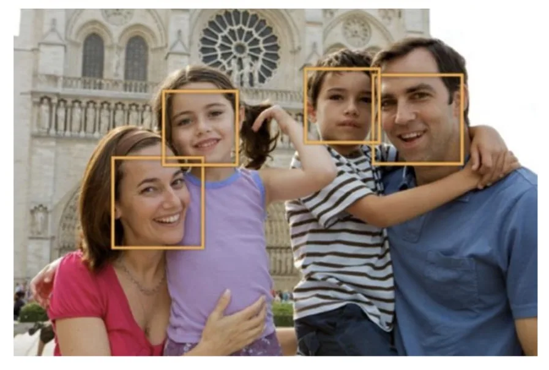
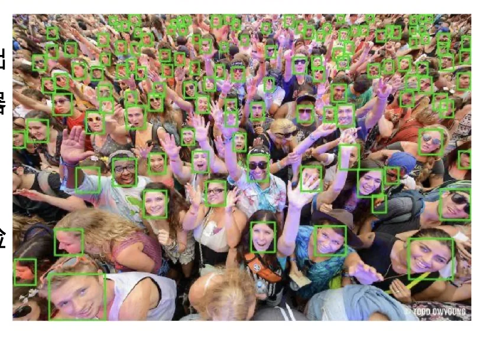
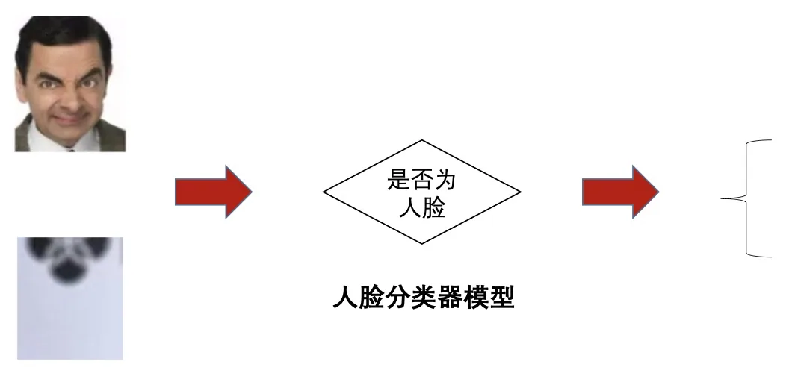
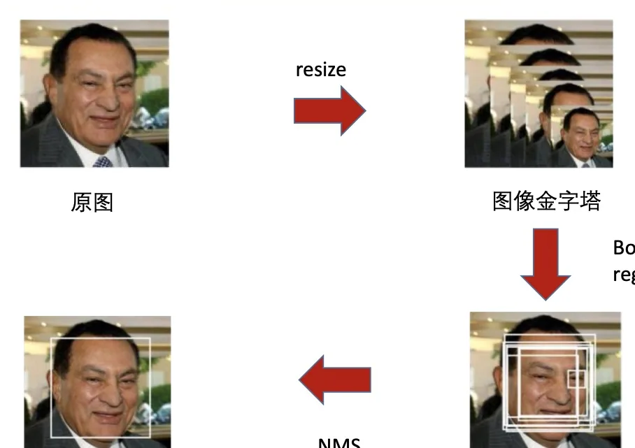
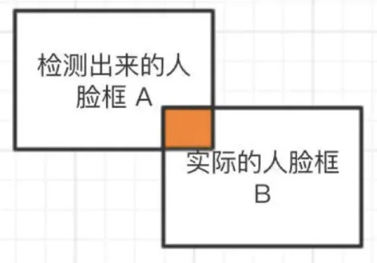

计算机视觉 · 第 8 章 人脸识别
8.2 人脸检测
人脸识别的第一步是先在图像里找到脸。这一节把「人脸在哪里」这个问题拆成三件事来讲：先看人脸检测到底要输出什么、为什么它是所有后续分析的前提；再看检测器内部是一个「滑动窗口 + 人脸分类器」的判定过程；最后交代三样必备技术——滑动窗口、图像金字塔、非极大值抑制，以及怎么用 IoU 和准确率来评价一套检测结果。
1. 人脸检测要解决什么问题
作为人脸识别的第一步，人脸检测主要用于确定人脸在图像中的大小和位置，也就是解决「人脸在哪里」的问题——把人脸区域从图像中裁剪出来，便于后续的人脸特征分析和识别。

这里的输出有两层含义：一是位置，通常用一个矩形框（bounding box）表示；二是大小，因为同一个人脸在图像里可能只占几十个像素，也可能占半张图。检测器要同时把这两件事说清楚，后面的人脸对齐才有东西可对齐。
2. 为什么人脸检测重要
课件把它的地位讲得很高：人脸检测是围绕自动人脸图像分析的所有应用的基础，也是所有现代基于视觉的人与电脑、人与机器人交互系统的初始步骤。

课件列出的应用包括：相机内嵌人脸检测，辅助自动对焦；面部形状重建；面部表情分析；图像视频检索等。这些应用的共同点是——只有先知道脸在哪，其余的分析才谈得上开始。所以检测的漏检和误检会一路传到下游：脸没检出来，这个人的识别就彻底失败；框歪了，对齐和特征表征都会跟着偏。
3. 检测器的核心：滑动窗口加人脸分类器
最朴素的检测思路是「枚举 + 判定」：把图像切成一个个窗口，逐个判断窗口里的子图像是不是人脸。判定这一步交给人脸分类器模型——它接收一个候选窗口，输出「是人脸」或「非人脸」。

把「整幅图像 → 一个二分类判定」这一步讲清楚，人脸检测的框架就清楚了：检测器不是一次性回归出所有人的脸，而是把检测问题转化成了大量小窗口上的分类问题。这也解释了为什么后面几节的深度网络大多仍是分类 + 回归的组合。
4. 三项主要技术
「枚举 + 判定」说起来简单，要落地必须解决三个问题：位置怎么枚举、尺度怎么覆盖、重复框怎么处理。课件给出的答案分别是滑动窗口、图像金字塔和非极大值抑制。
（1）滑动窗口
由于人脸可能出现在图像的任何位置，检测时用一个固定大小的窗口在图像上从上到下、从左到右扫描，判断窗口里的子图像是否为人脸。这就是滑动窗口技术（sliding window）。
它的代价是计算量：窗口每移动一个步长就要做一次分类，一张图片上要判定成千上万个窗口。窗口步长越小、定位越精细，计算量也越大——这是检测算法效率问题的根源。
（2）图像金字塔
固定大小的窗口只能覆盖一种人脸尺寸。为了检测不同大小的人脸，还需要对图像进行放大或者缩小，构造图像金字塔，对每张缩放后的图像都用上面的滑动窗口方法扫描一遍。

课件第 12 张把这条链路画了出来：原图 → resize 构造图像金字塔 → 检测得到候选框 → 边界框回归（bounding box regression）。最后一步值得单独记一笔：滑动窗口给出的框是按窗口位置切的，未必正好卡在人脸边界上，所以要再回归一次，把框的位置和大小修正到更贴合人脸。这也是「分类 + 回归」这一经典组合的由来。
（3）非极大值抑制
滑动窗口的扫描是稠密的，同一个人的脸附近往往会被检测出多个高度重叠的候选框。这些框内容上说的是一件事，必须合并去重，这一步称为非极大值抑制（Non-Maximum Suppression，NMS）。
NMS 的做法是：按置信度高低排列候选框，保留分数最高的那个，再把它与其余框重叠过多的（例如 IoU 超过阈值）一并去掉，如此反复。它决定了最后每个目标只留一个框——没有它，同一张脸会变成一串检测结果。
5. 人脸检测的评价：IoU 与准确率
要判断一个检测框「对不对」，需要一个衡量两个框重合程度的指标，这就是 IoU（Intersection over Union，交并比）：
IoU = A 与 B 的交集 / A 与 B 的并集
课件给出的判定标准是：当检测框和实际的人脸框（Ground Truth）的 IoU 大于某个阈值（例如 0.5）时，就认为这个检测框是正确的。

在 IoU 之上，就能统计检测的准确率：Precision（准确率）＝ 检测正确的个数占检测框总数的比例。它的含义是「报出来的框里有多少是对的」。实际系统中还需要配合召回率一起看——准确率高但漏掉了大量人脸，同样不能用——这一点课件没有展开，但评价检测器时不能只看一个数。
本节小结
- 人脸检测解决「人脸在哪里」，输出人脸的位置（矩形框）和大小，是后续人脸对齐与识别的第一步，也是所有自动人脸图像分析应用的基础和人机交互系统的初始步骤。
- 基本框架是滑动窗口 + 人脸分类器：用固定窗口在图像上逐位置判定「是否为人脸」，把检测问题转成大量小窗口上的分类问题。
- 三项必备技术：滑动窗口负责遍历位置，图像金字塔负责覆盖尺度（并在检测后做边界框回归修正框的位置），非极大值抑制负责把同一张脸的重叠候选框合并去重。
- 评价检测框用 IoU（交集/并集）：与真实人脸框的 IoU 超过阈值（如 0.5）即认为检测正确；在此基础上统计 Precision（准确率）＝检测正确的个数占检测框总数的比例。